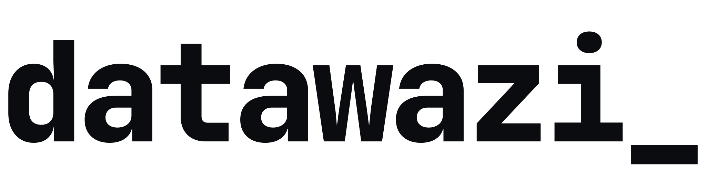
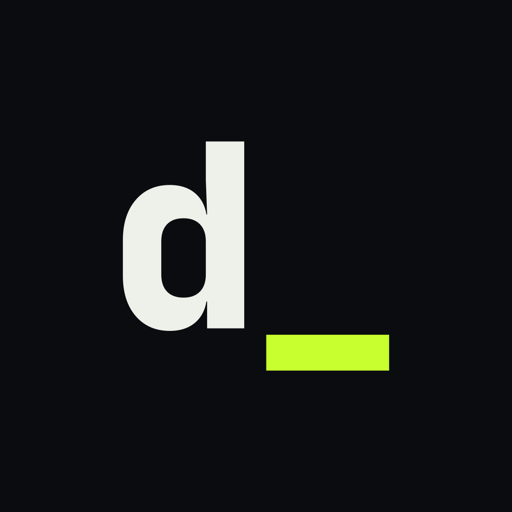

Who we are, what we do, who we do it for, and how we talk about it. Read this before you write, design or post anything for datawazi.
A data & AI solutions consultancy based in Malaysia.
We design, build and run the data and AI systems that help organisations work smarter.
Most organisations already have the data they need. It's just stuck in spreadsheets, separate systems and people's heads, so reports take days and nobody trusts the numbers.
datawazi connects those systems, builds one reliable source of truth, and puts it to work through dashboards, automation and practical AI. We start from the business decision, not the technology, and every project ends with a team that can run it.
| Name | datawazi, always lowercase (logo: datawazi_) |
| Type | Data & AI solutions consultancy |
| Based | Malaysia |
| Serves | Any organisation: SMEs to GLCs |
| Website | datawazi.com |
| Contact | hello@datawazi.com |
| Book | cal.com/datawazi/fit-check |
| First step | A free 30-minute fit check |

datawazi info pack · internalThe name joins data with wazi, a word with two meanings. Both are deliberate: together they're why datawazi chose the name. The trailing underscore is a blinking terminal cursor: the system is live, and the work keeps going.
datawazi reads as "data made clear". That's the job: take messy data and make it clear enough to decide with.
To Malaysian ears it echoes wazir (minister, trusted adviser): a "data adviser". That's the role we play for clients.
| Context | Write | Never |
|---|---|---|
| Logo | datawazi_ (logo file only, never retyped) | DataWazi_, DATAWAZI_ |
| Sentences | datawazi (always lowercase, even at the start of a sentence) | Datawazi, DataWazi, Data Wazi, DATAWAZI |
| Handles, URLs | datawazi | data_wazi, datawazi.my (we use .com) |
| Legal documents | the registered name, exactly as on the SSM certificate | an informal version |
We work with any business or organisation that has data and decisions to make. Never position us as serving one niche, and never as a marketing business.
| Sector | What they typically say |
|---|---|
| SMEs | "Our numbers live in twelve spreadsheets." |
| Corporates | "Every department has its own version of revenue." |
| Public sector & GLCs | "Board reporting takes three weeks to pull together." |
| Non-profits | "Funders want impact data we can't easily produce." |
| Education | "Enrolment and finance data don't talk to each other." |
| Healthcare | "Patient data has to stay protected and in-country." |
| Startups | "We want AI in the product, not a science project." |
CEO, MD, COO, CFO, head of department. Cares about time, cost, risk and trustworthy numbers.
Finance, operations or reporting lead who lives with the manual work today.
IT manager or small data team. Cares about security, PDPA, fit with existing tools, and who supports it.
Slow reporting. Month-end takes days of copy-paste.
No single truth. Different teams, different numbers.
AI pressure. Everyone wants AI; nobody knows for what.
One governed place where business data lands, gets cleaned and is ready to use.
ERP, CRM, finance/HR, spreadsheets, APIs and files, moved automatically.
Reports and dashboards built on reconciled data, not exports.
Removing the repetitive manual steps between people and systems.
Internal apps, portals and trackers that replace fragile spreadsheets.
Knowledge assistants, chatbots and AI features, grounded and safe.
A paid review of systems, data and goals that ends in a prioritised roadmap. The usual starting point.
Workshops, team playbooks and an AI usage policy, so people use AI well and safely.
A monthly retainer: monitoring, fixes, small changes and improvements.
"Start with a 30-minute fit check."
"A demo every week."
"Every number ties back to your source systems."
"Built to hand over."
| # | Principle | What it means | Proof we can point to |
|---|---|---|---|
| 01 | Business first | Decisions before technology. We start from the problem and the decision it serves. | Intake starts with "what problem, why now, what does success look like" |
| 02 | Practical, not hype | Working systems and honest scoping. If AI isn't the answer, we say so. | Free fit check; we refer out when we're not the fit |
| 03 | Built to hand over | Documentation and training in every project. The client can run it without us. | Handover pack + training + hypercare in every SOW |
| 04 | Vendor-neutral | We recommend what fits the team, budget and existing tools. We don't resell licences. | Microsoft, Google, AWS, open-source: whatever fits |
| 05 | PDPA-aware | Malaysia's Personal Data Protection Act is designed in from kickoff, including where data is stored. | PDPA checklist and data processing agreement at kickoff |
Strategy that ends in working systems: platforms, pipelines, dashboards, automation and AI.
From an SME's first dashboard to a GLC data platform. We right-size the solution and the budget.
Handover, docs and training are standard, so there's no lock-in. Ongoing support is optional.
PDPA-aware, read-only where possible, data kept where you need it.
[03] // what we build| Use | Avoid |
|---|---|
| build, connect, automate | revolutionise, disrupt |
| one source of truth | synergy, leverage |
| practical AI | AI-powered everything |
| work smarter | unlock, supercharge |
| hand over, train | cutting-edge, next-gen |
| fit check | free consultation (sounds salesy) |
Short (≈20 words): datawazi is a Malaysian data and AI solutions consultancy. We design, build and run the systems that help organisations work smarter.
Long (≈70 words): datawazi is a data and AI solutions consultancy based in Malaysia. We help organisations of every kind, from SMEs to public sector and GLCs, turn scattered data into systems that work: data platforms, pipelines and integrations, dashboards, workflow automation, custom tools and practical AI. We start from the business decision, stay vendor-neutral, design for PDPA from day one, and hand every project over with documentation and training. Start with a free 30-minute fit check at datawazi.com.
Obel Mono for everything: headlines (ExtraBold), subheads (Bold), body (Regular). Free licence, so install it from the brand folder.
Logo exception: the datawazi_ wordmark is drawn in JetBrains Mono ExtraBold. Always use the logo files; never retype it.
[03] // section
| Need | Where |
|---|---|
| Logos (SVG, PNG, square) | brand/logo/ · brand/logo/square/ |
| Font files | brand/fonts/obel-mono/ttf/ (install these) |
| Brand guide | brand/BRAND.md |
| Slide template | sales/deck/Datawazi_Slide_Template.pptx |
| Website copy | website/site/src/data/content.ts |
| Questions & approvals | hello@datawazi.com |
Book: cal.com/datawazi/fit-check
datawazi.com · hello@datawazi.com